United Twins is an inborn team. The twins were born together,
grew up together and collaborated together. They believe that teamwork is one of the fundamental
cores
of the human being. That’s the reason why this team has been always committed to teamwork.
For more information about each member, click their name.
Work Experience and Projects
During the period of our Education, not only were we devoted
to our lessons and academic projects, we also worked in the industry to earn expertise and expand
our knowledge.. Our entrepreneurship projects and other ones are made available here.
Designing intuitive user interfaces and user experiences.
Software Engineering
Designing a flexible and expandable code with robust design patterns.
Mobile Computing
Developing mobile applications.
Magic FlashCards
A set of educational apps for the young English
learners.
We live in a world where learning another language,
especially English is vital.
Magic Cards 1 is a fun, ad-free and interactive app. Practice reading, listening,
and writing to build your vocabulary skills.
Designed by people who have studied the English when they were at the age of ten or
so. Therefore, all the features are built based on the materials that a child needs.
In other words, this app is designed by the RIGHT people.
Why Magic Cards?
We collected more than 1000 useful words and vocabularies that children should know
in the first place. These handy vocabularies would help your child develop a robust
learning curve for learning English. Having this complete collection in mind, we
designed a unified dictionary which allows you to search for the word, see the
definition in picture, listen to the pronunciation and of course, add it to your
favorites/bookmarks. This app is one of the eight apps that we are developing. Once
your child learned all of the words in this app, he/she can download the next-level
vocabularies app (Magic Cards 2) that we would make it available in the near future.
(Magic Cards is a set of 8 apps)
Share your progress with your friends and your teacher
Colorful themes
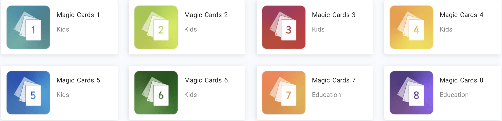
Features in details:
Our developers have classified the vocabularies by the category. By choosing a
category, you would be prompted with the flash-card page. It allows your child to
review the worlds and there are three progress bars which show the following
information:
how many words your child knows.
how many worlds he/she is reviewing right now.
how many words are in the learning process.
It’s the best practice for your child to examine what he/she has learned. So we
designed interactive challenges get a feedback of your child. By taking these
challenges, he/she will find out what his/her mistakes are. He/she can get back to
flash-cards and practice again. The process of going back and forth between these
two stages would reduce the possibility of forgetting the vocabularies. We have also
implemented feature in which you can share the your child’s progress with his/her
teacher. He/She can share the progress with his/her friends.
Express your character by choosing your favorite color that would be set as the
primary theme of the app.
Your status at a glance
A chart is implemented in the app that shows how many words/vocabularies are in
process of learning or has been learned before.
Category:
Education and Learning for Kids and Children
Salema Diet Application
A diet-oriented app for the people who need a diet
consultant and the folks who want to stay fit.
The very first year of the university was over and by
that time, we’d had learned the
fundamental concepts of programming and object oriented thinking. To put our
knowledge into the practice, we joined a company that was aiming to release a
diet-based application at the time. We were a group of 5 computer engineering
students which had zero experience
in working at the industry. Here are the challenges we confronted and ultimately,
solved during
a course of three months:
1. By that time, we hadn’t really worked on a real project that’s going to be used
by a large number of people.
2. Our employer had asked us to develop and design this application with the Flutter
framework. At the time, flutter hasn’t been released for the mass production and it
was still in the beta phase just for the developers and the enthusiasts. Being one
of the early adapters of a new programming languages means that we have to solve our
problem by ourselves or at the worst scenario, ask it from the community. However,
of course, there’s a real lack of information in the forums since the community is
still under the development. Therefore, we had to have a R&D team dedicated to
solving the problems and looking for the best implementations.
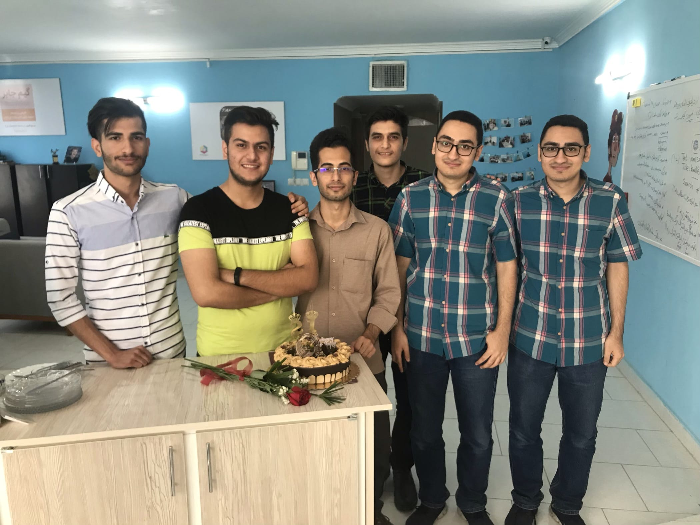
From left to right: Mohsen AliMohamadi, Ali Tabaraee, Ali Alizade, Ehsan Sepehri,
Navid All Gharaee and Saeed All Gharaee at White Designers Studio while celebrating
Ali's 21st birthday.
Ali took the leadership of the group. Mohsen and Ali (this is another Ali :) ) took
the
programming part of the project. Navid and Saeed were not only responsible for
programming and engineering of the app, they also contributed to the R&D of the
team. The result was a mobile app ready to be shipped to the customers and all that
took was only 3 months. After the app was successfully released, Navid and Saeed
left the company to pursue their own project with the experience they’d gained.
Client:
White Designers
Category:
Health and Diet
RadarGPS (AKA Radar Faratek Hooshmand)
Flutter Software Developers, Engineers and UI & UX @RadarGPS
After passing a two-month-long internship in the company, Navid and Saeed were
employed as full-time developers and worked specifically on the mobile app, using
Flutter framework.
RadarGPS is specialized in radar technologies and developes hardware and software
for tracking technologies.
For more information, please visit the company's official
webpage.
Employer:
RadarGPS
Category:
Utilities and Tools
Internship at Part Software Group
Earned experties in developing
applications with Swift.
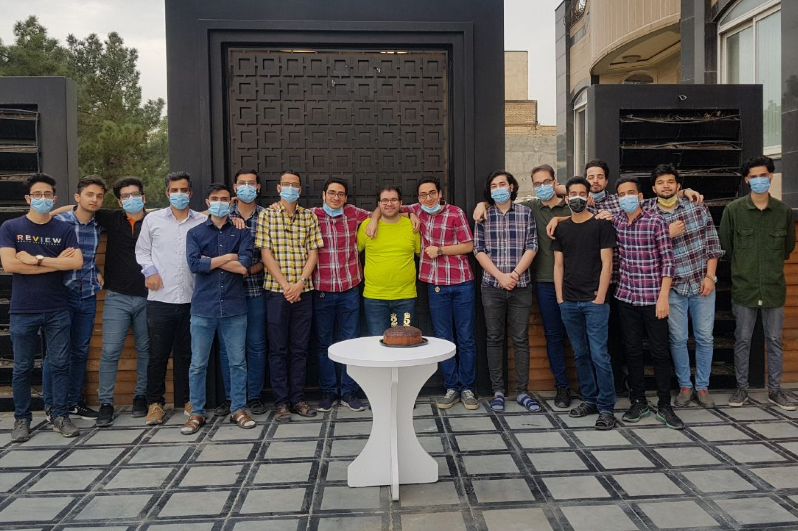
Twins continued their journey by starting their
internship at Part software group.
They undertook developing applications using swift.
Musico
An Open-Source Project
Apple prevents you from using any music extension with built-in Music app. Imagine
you have an mp3 file in Whatsapp, You can easily transfer to Musico and continue
listening. The aim of this project is to experiment with Swift's APIs and also
contribute to the open-source community.
Musico supports many music extensions.
All you need to have your app supported different file extensions is to add Document
Content Type Identifiers in info.plist. More info is available here.
Musico is available at Biggboss
Repository and you can install it after jailbreaking
your iPhone or iPad. You can also review the code at GitHub.
Champion Swift
A Study about SwiftUI Framework
This open source project aims to evaluate SwiftUI
performance and philosophy. The app
is about football live scores, teams, players and leagues information using API
Football.
We have tried to keep the code as clean as possible by employing the robust models
and test cases. Feel free to clone the code from GitHub and see if you
can expand its features.
⚡️Stamina
Bachelor's Thesis
Every Bachelor's student should undertake a project by the end of its last semester
and that project, theoretically, is a representative of all the knowledge which the
student has gained throughout its studies. Academic projects can be classified into
two categories, research based and project based. Stamina lies under the project
based category.
Abstract
It cannot be denied that Covid 19 has had negative impacts on the way people
exercise since many gyms and work-out sessions have been closed. Consequently, there
has been an upward trend in the number of users who subscribe to weekly or seasonal
training plans such as Apple
Fitness+ or Peleton which provide
instructions using
videos and voice assistants to ensure that users can follow them precisely. However,
these services are unable to check if the user performs the actions accurately.
Since there is no measurement that help ensure that they are not performing
movements incorrectly, not only may users lose their motivation in continuing
exercise activity, they may also end up with severe injuries in long term.
Pros and Cons of the services in the market
There are many services that provide different procedures for work-out activities.
Tempo is a service that introduces novel techniques
for indoor work-out. It includes
over a thousand of workout videos and provides guided work-out sessions by top
professionals in different fields. The main selling point of this service is that it
analyses user’s posture and actions in real-time and gives a detailed insight about
the user’s performance. It also comes with lifting equipment that is recognized by
the app. This app has a leaderboard which shows other users’ performances and
encourages users to reach the top of the leaderboard. However, there are many
reasons why this service is not reachable to many people. First of all, it requires
users to pay for the service on either monthly or yearly basis, which is not ideal
for many users. Moreover, in order to take advantage of the more sophisticated
features of this application such as posture recognition, users should use high-end
iPhones, more specifically, iPhones that are equipped with lidar sensors such as
iPhone XS and iPhone XR. This is not feasible for large number of people, since most
of the people use less advanced or older models of iPhones. More importantly, this
service overlooks android users, which means that the people who own Android
smartphones cannot use this service. Another alternative service is called Plank
which is developed by Exer. This application is also able to examine user’s
movements and presents voice feedbacks for guidance. The advantage of this service
compared to previous one is that it does not need any additional hardware and it
only uses phone’s built-in camera to proceed. However, it is only compatible with
iOS devices such as iPhone and iPad. In other words, Android users cannot use the
services and the application unless they afford an iOS device, which is not
practical for many people.
Brief look at other studies
We have investigated many other studies in which there are three types of feedback
functions which ensure that beginners can make progress and stay motivated during
training sessions. In one pilot study, OpenPose was used to detect necessary points
to proceed the evaluation of squat postures. While the training posture should be
automated, among different approaches regarding motion analysis OpenPose was chosen
due to its ease of use and limitation in time, space and expenses. However, since
only two-dimensional images are involved, some complicated movements may be ignored
or compromised. That is why the position of the camera matters.
Skelton is detected using OpenPose to evaluate human movement. Ideal posture is the
one which receives the highest score as there are 4 parts of the body which are
crucial in the measurement.
Having given a score to different parts of the body, user can observe them as
numbers.
In video annotation, two types of feedbacks are suggested. Firstly, user can compare
its training pictures with the instructor on the screen, secondly, the voice
assistant can guide the user and let it know about its errors while performing.
Photographing angle can affect the outcome. Based on an experiment, it is proved
that some points may seem very similar to system whereas from another angle, the
differences stand out.
We do not want to limit movements to a specific training such as yoga or squat which
some other studies did. Hence, we aim to generalise it to any activity which
involves body posture. In other words, it can potentialy be used in military or
dance classes.
⚡️Stamina
We propose a system that can be used with any modern smartphone to analyze and
detect errors. A trainer records the workout which is uploaded to a cloud service
and main elements of the body are extracted by the cloud service. Unlike mentioned
services in the previous section, our app is compatible with a large proportion of
the smartphones and tablets and it is not limited to a certain platform. There are
several scenarios in which the user can examine the movements.
The user can create a workout session in which he/she defines and labels that
session. Next, the user is required to upload a video of that activity which is used
as a reference video. To get the most out of this algorithm, the reference video
should be a clip of a professional whose movements would meet the criteria of
correct movements. Afterwards, the user can record a short video of themselves while
performing the movements. At this point, the user would eventually stop recording
and upload the video to the server. Then, the server will return an analyzed and
processed video of the user’s actions and this is the stage where the user can see
how much his movements have been aligned with the reference video. This process can
be repeated many times and the app projects the progress of the user into a chart to
visualize the progress. The figures are shown in chronological order and the user
can monitor its development. The advantage of this design is that the user can
simultaneously monitor its progress in different exercises by creating different
exercise sessions. Every session has its dedicated reference video and chart.
Although Stamina is an academic project, it was one of the most complex project that
has ever done by the United Twins Team, since the team was responsible for all of
the stages of the development, from initial ideas and design to validation and
implementation. The design process was not limited to the code base and it included
every component of the application i.e. database design, system architecture and
etc.
Deeper Look at ⚡️Stamina
It starts with a login page. Users can either create a new account or log in,
provided they have made an account before. The advantage of having account in this
app is that the user can restore its progress and never lose its data. This feature
is useful when user wants to switch its device or more than one person is using the
app. With the consent of the user, this app creates a backup from the user's data
and restore that backup whenever the user logs in in any device.
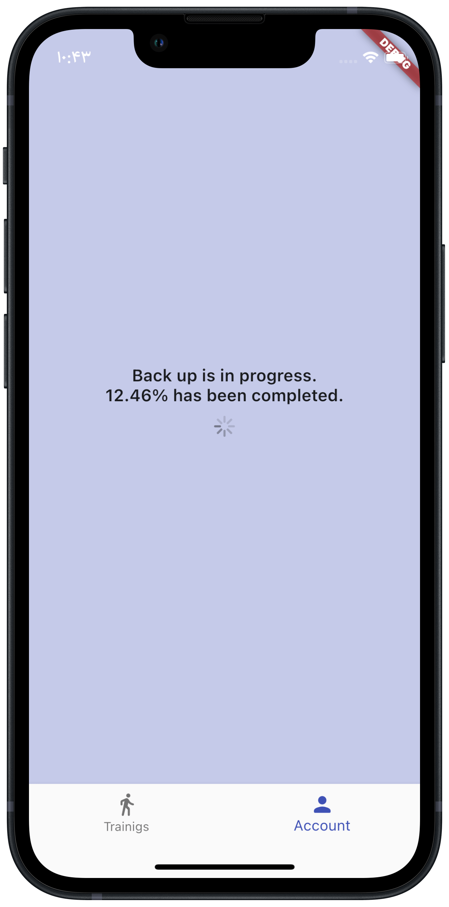
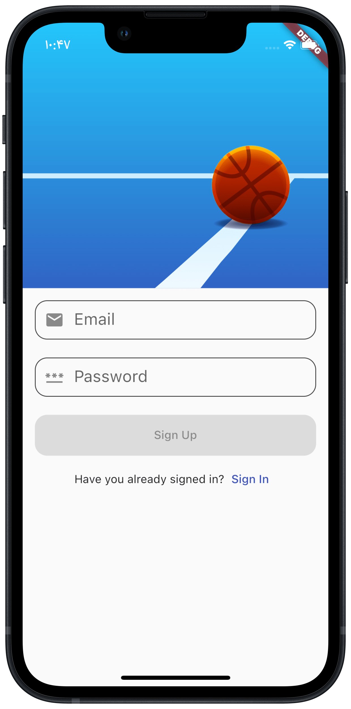
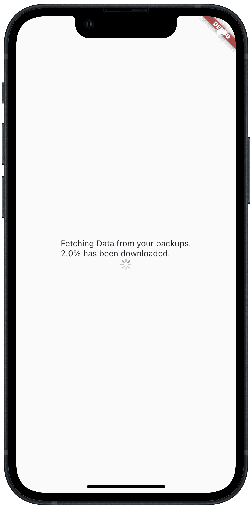
Authentication page
After successfully completing the authentication stage, the dashboard page is shown.
This page contains all of the workout categories that have been instantiated by the
user or are to be instantiated. These categories contain reference images that would
be compared to user's movements. User can also remove those categories.
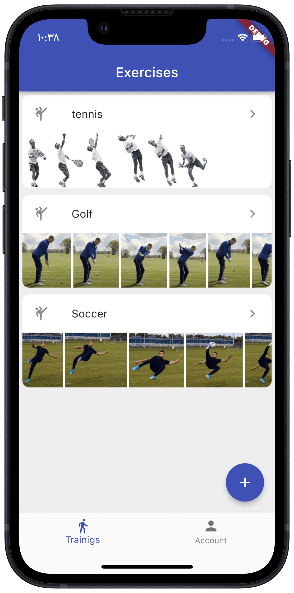
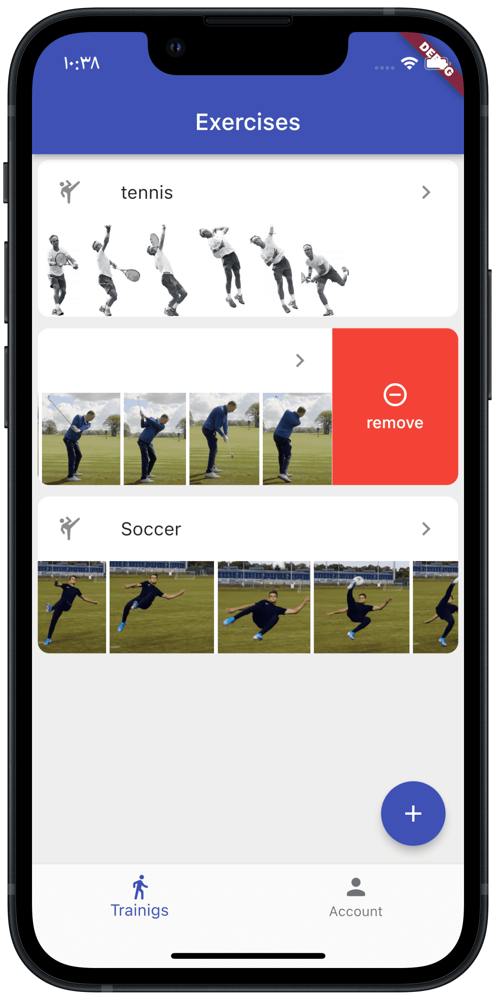
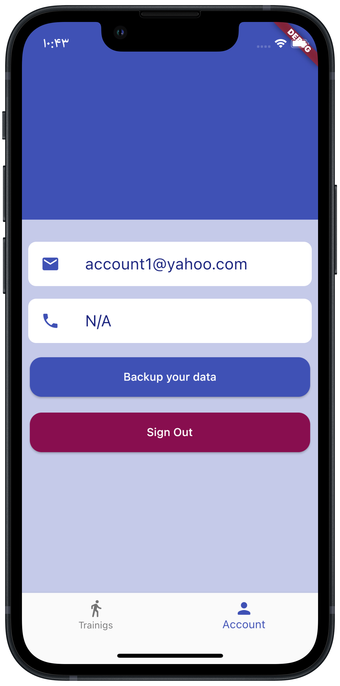
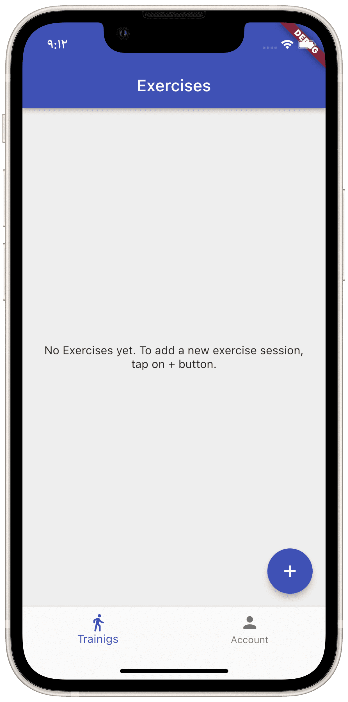
Dashboard page
Upon creating a new session, the user should set a name for the session, after which
it should set reference images that can be either chosen from the predefined images
in the application or selected from the library of the phone.
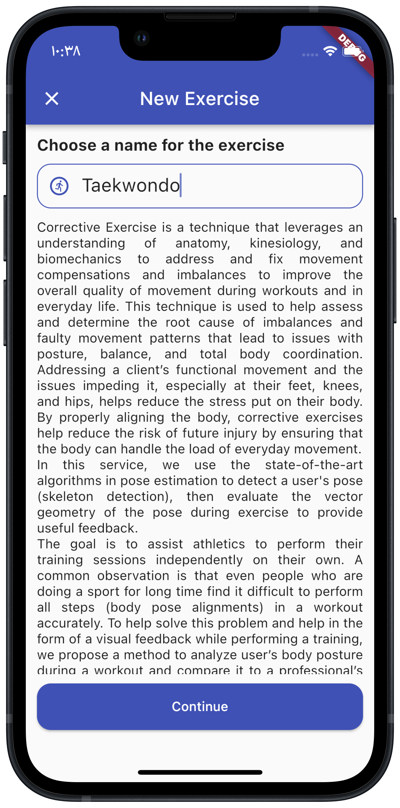
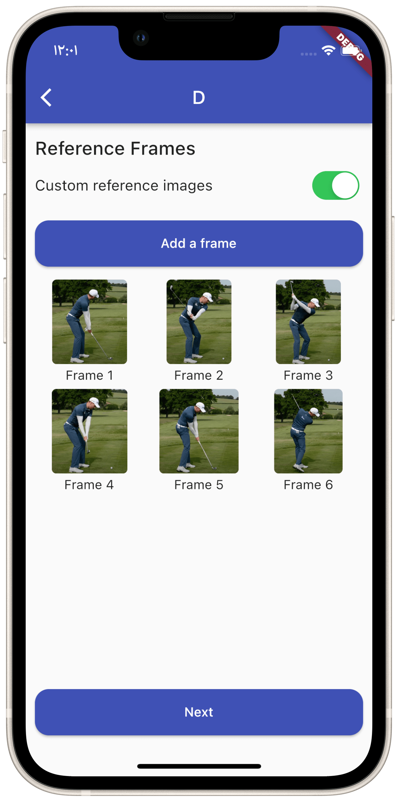
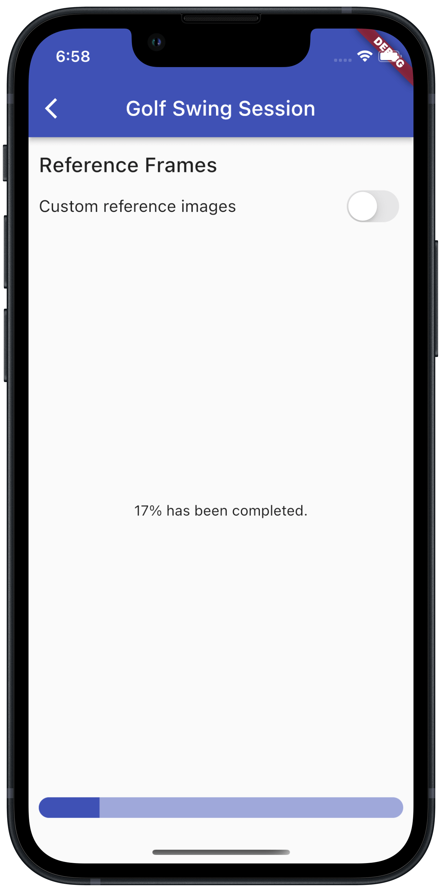
Reference image set up procedure
In the next stage, the user can upload the test images that represent the movement
of itself. Then, photos would be uploaded and it analyzed by the API. User can now
get to know its performance by the number of error points which are shown as red
dots in the annonated image. If user uploads another test images set, it would not
override its previous data. It would add another data which helps the user to see
its performance nd progress throughout the time. The data is visualised using
interactive charts that indicate the overall progress of the user, as well as its
performance in each frame.
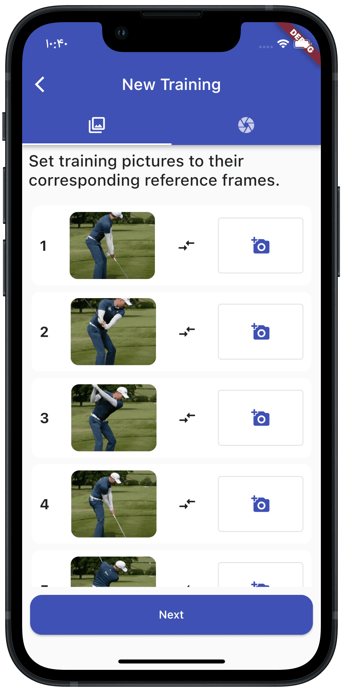
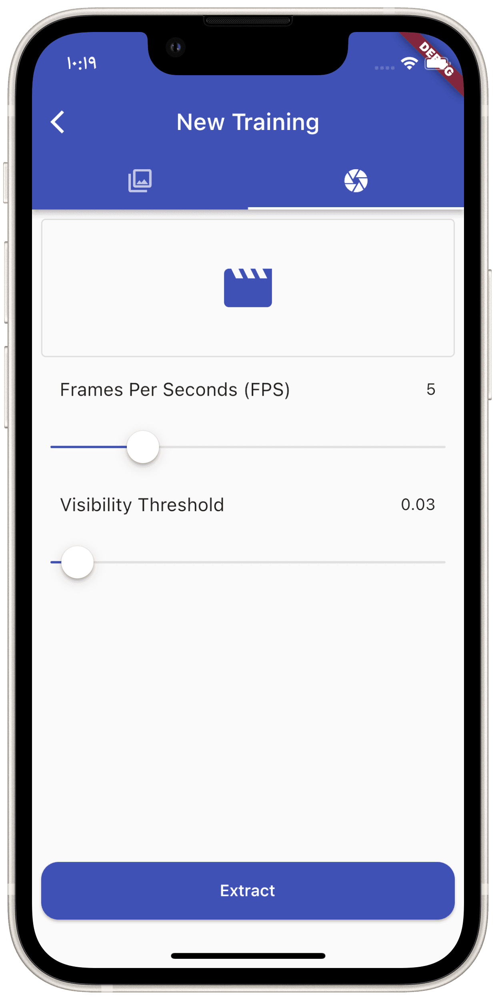
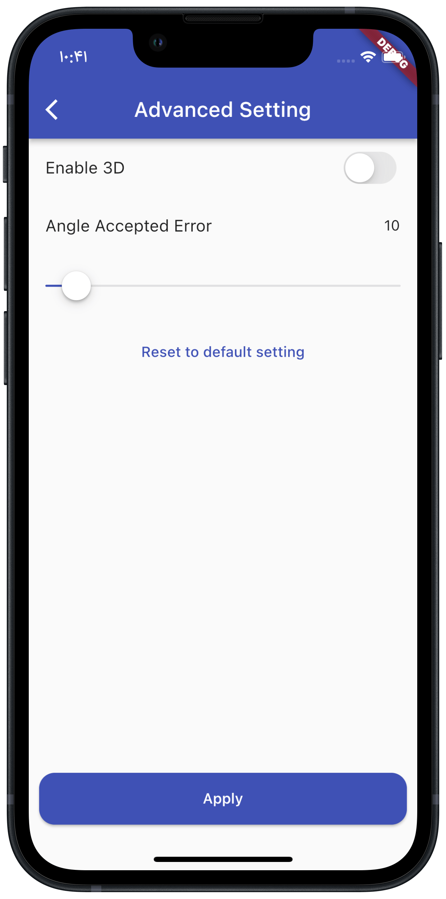
Test images set up procedure
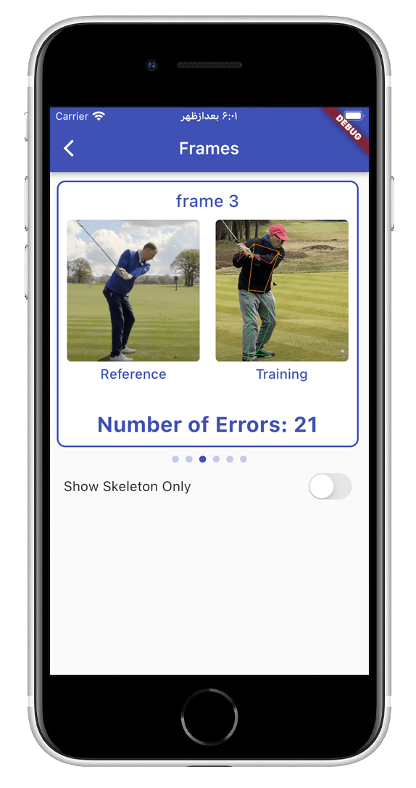
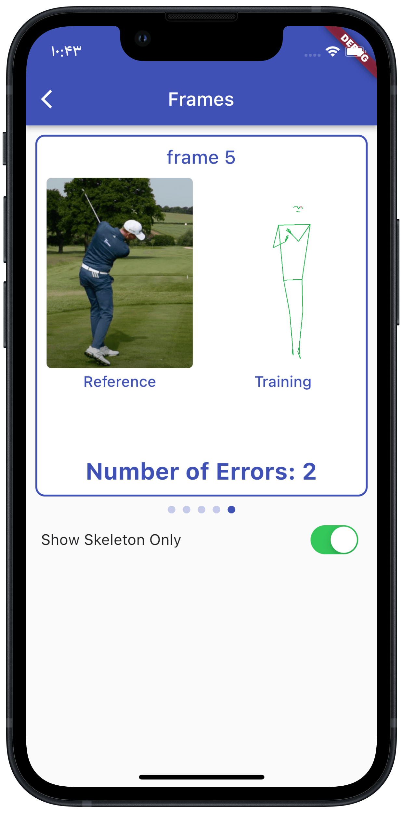
Output
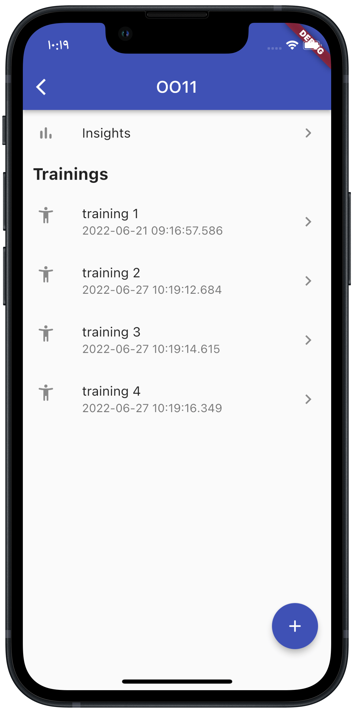
Data visualization
There are more details lying in the background of this app, but that would be a
story for another day. However, we encourage you to have a look at the thesis paper
and presentation slides
appreciate the
attention to details and times we put on this
project.

 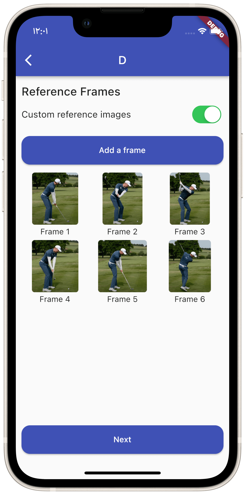
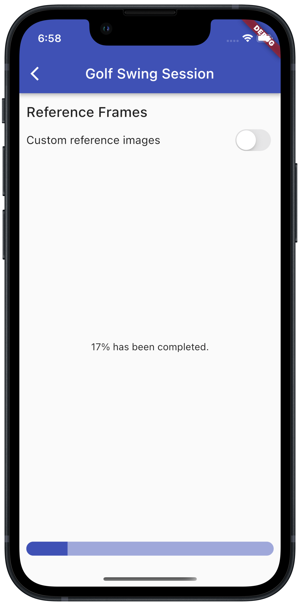
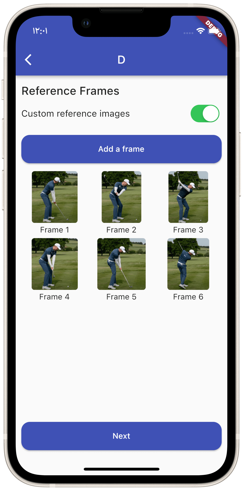
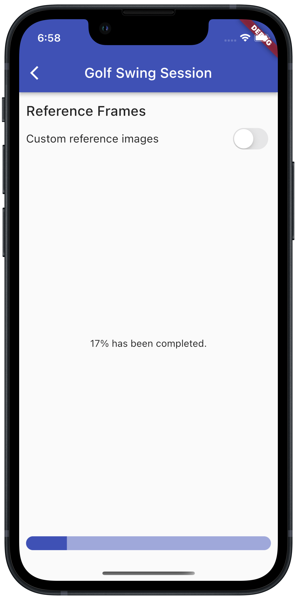